| country | life_expectancy | hospital_beds_per_1k | hosp_beds_cats | gdp | gdp_cats |
|---|---|---|---|---|---|
| Kiribati | 66.1 | 1.9 | < 2 per 1k | 1.702910e+08 | Bottom 25% |
| Italy | 82.5 | 3.2 | > 2 per 1k | 1.836638e+12 | Top 25% |
| France | 82.3 | 6.1 | > 2 per 1k | 2.439189e+12 | Top 25% |
| Uruguay | 77.5 | 2.4 | > 2 per 1k | 5.327430e+10 | Middle 50% |
| Brunei Darussalam | 74.8 | 2.8 | > 2 per 1k | 1.293039e+10 | Middle 50% |
| Barbados | 76.7 | 5.9 | > 2 per 1k | 4.724691e+09 | Bottom 25% |
| Somalia | 54.9 | 0.9 | < 1 per 1k | 5.335000e+09 | Bottom 25% |
| Ireland | 81.5 | 2.9 | > 2 per 1k | 2.917752e+11 | Top 25% |
| Iraq | 69.4 | 1.4 | < 2 per 1k | 1.667741e+11 | Top 25% |
Today’s Agenda
Multivariate Analyses
Descriptive statistics by groups
Using facets to extend any visualization
Mapping 3rd variables with colors or shapes
Justin Leinaweaver (Spring 2024)
Building a Causal Argument
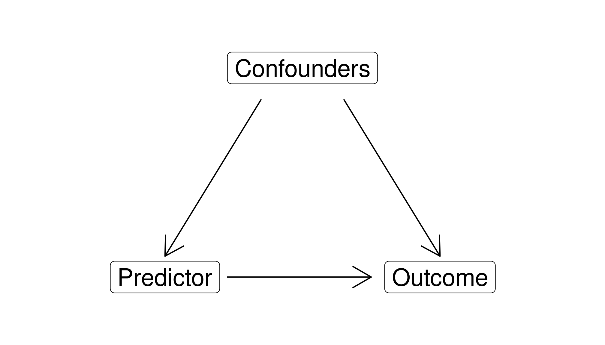
Building a Causal Argument
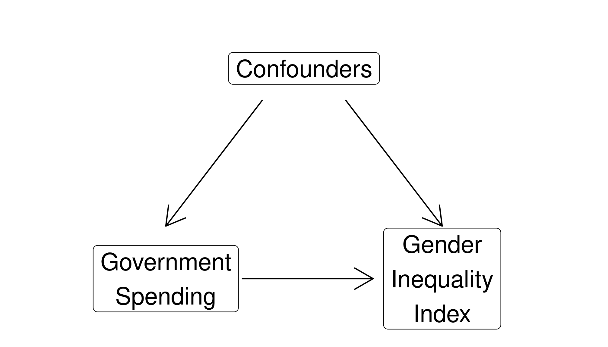
Multivariate Analyses
Descriptive statistics by groups
Using facets to extend any visualization
Mapping 3rd variables with colors or shapes
Do countries with more hospital capacity have longer life expectancies?
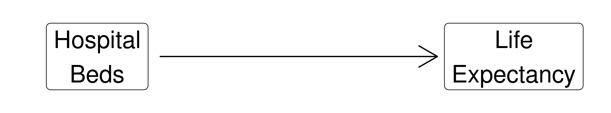
Do countries with more hospital capacity have longer life expectancies?
- Import ‘WDI-Life_Expectancy-2015.csv’ into R
Do countries with more hospital capacity have longer life expectancies?
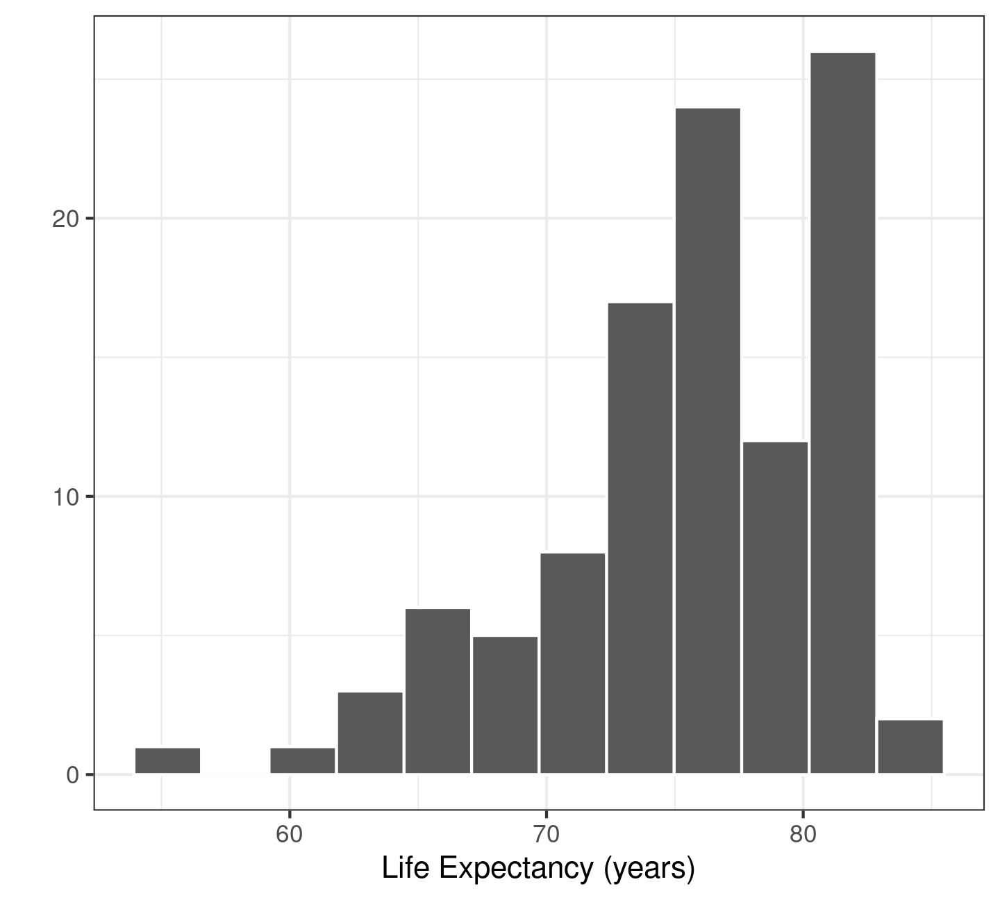
| Min | 54.9 |
| 1st Qu | 72.9 |
| Median | 76.4 |
| Mean | 75.6 |
| 3rd Qu | 80.7 |
| Max | 83.8 |
Do countries with more hospital capacity have longer life expectancies?
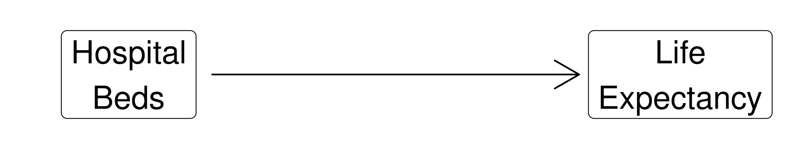
Calculate the mean life expectancy (‘life_expectancy’) across the levels of hospital beds (‘hosp_beds_cats’)
Do countries with more hospital capacity have longer life expectancies?
Building a Causal Argument
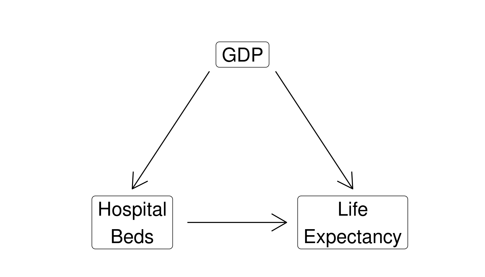
Building a Causal Argument
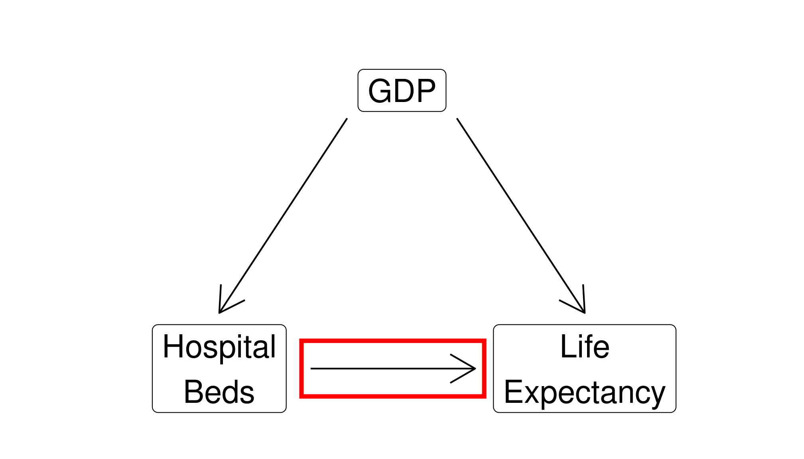
Multivariate Analyses
Descriptive statistics by groups
Using facets to extend any visualization
Mapping 3rd variables with colors or shapes
1. Descriptive Statistics by Group
Bivariate Analyses: Numerical x Categorical
1. Descriptive Statistics by Group
Multivariate Analyses: Numerical x Categorical x Categorical
hosp_beds_cats gdp_cats life_expectancy
1 < 1 per 1k Bottom 25% 54.85700
2 < 2 per 1k Bottom 25% 66.99950
3 > 2 per 1k Bottom 25% 75.36496
4 < 1 per 1k Middle 50% 67.85600
5 < 2 per 1k Middle 50% 74.32208
6 > 2 per 1k Middle 50% 76.71923
7 < 1 per 1k Top 25% 68.88075
8 < 2 per 1k Top 25% 74.49050
9 > 2 per 1k Top 25% 80.139911. Descriptive Statistics by Group
Multivariate Analyses: Numerical x Categorical x Numerical
Multivariate Analyses
Descriptive statistics by groups
Using facets to extend any visualization
Mapping 3rd variables with colors or shapes
Do countries with more hospital capacity have longer life expectancies?
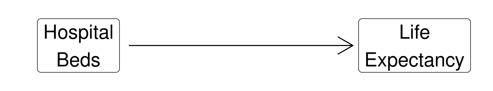
Visualize life expectancy (‘life_expectancy’) and hospital beds (‘hospital_beds_per_1k’) with a scatter plot
2. Using facets to extend a visualization
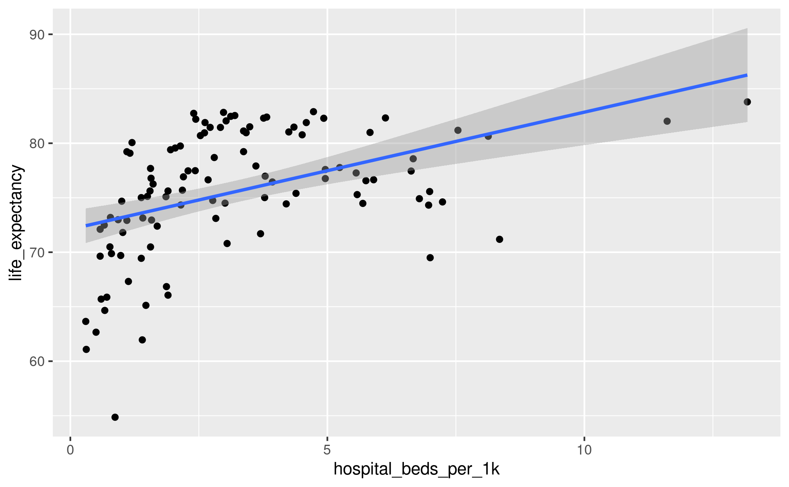
2. Using facets to extend a visualization

Multivariate Analyses
Descriptive statistics by groups
Using facets to extend any visualization
Mapping 3rd variables with colors or shapes
3. Mapping 3rd variables with colors or shapes
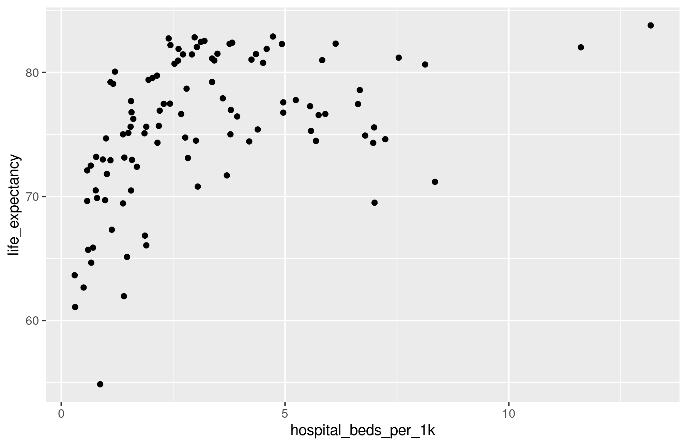
3. Mapping 3rd variables with colors or shapes
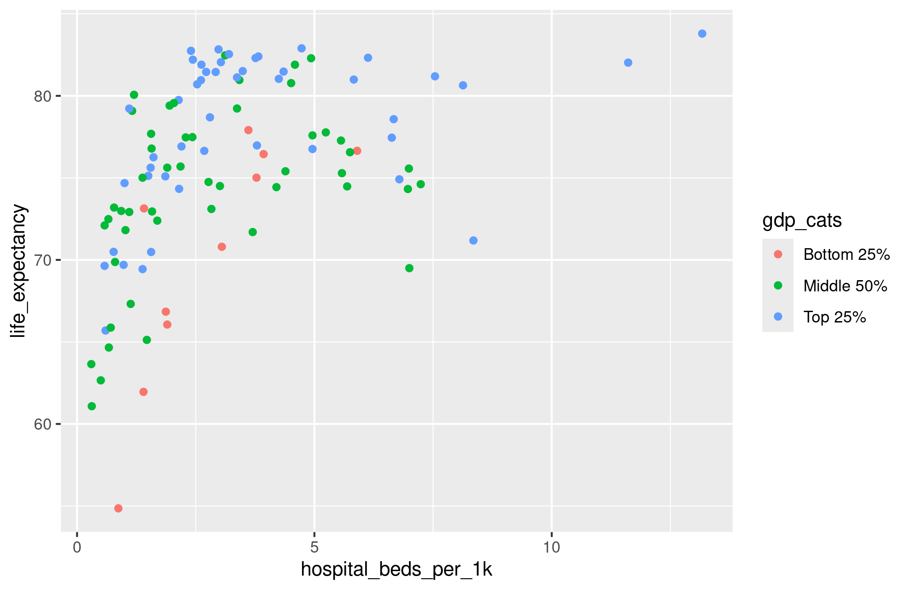
3. Mapping 3rd variables with colors or shapes
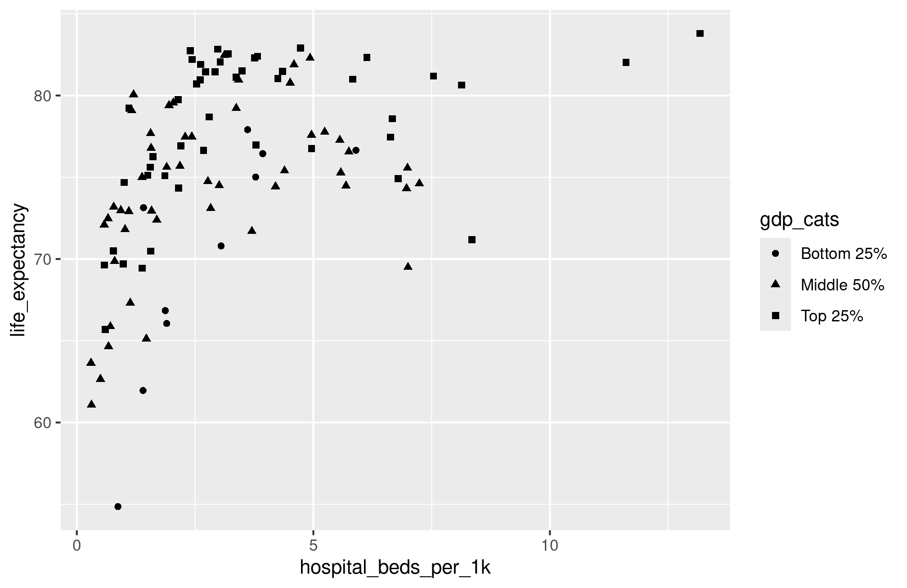
3. Mapping 3rd variables with colors or shapes
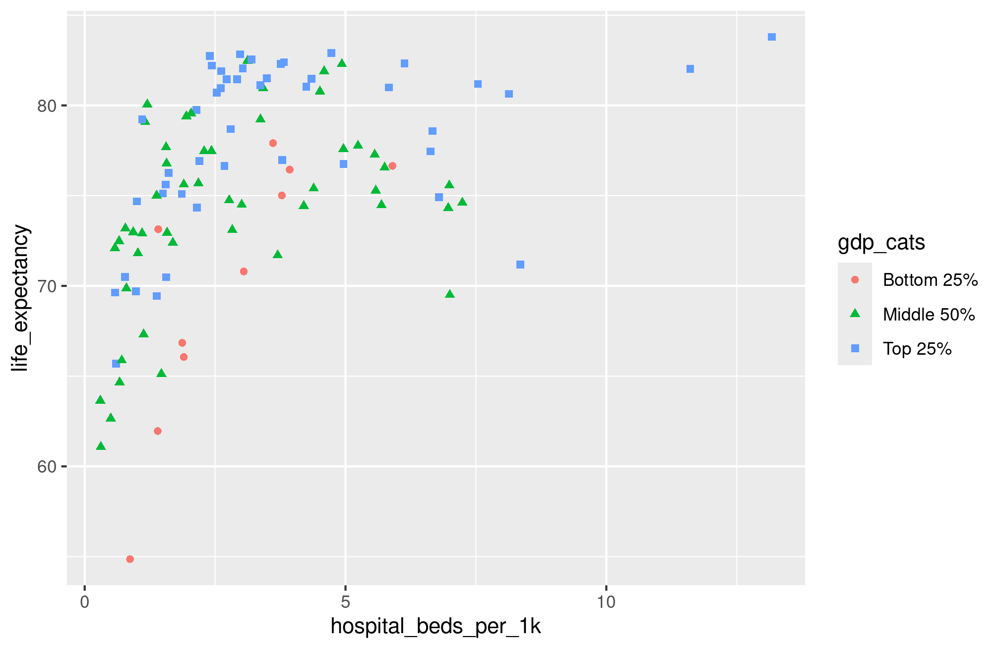
3. Mapping 3rd variables with colors or shapes

3. Mapping 3rd variables with colors or shapes
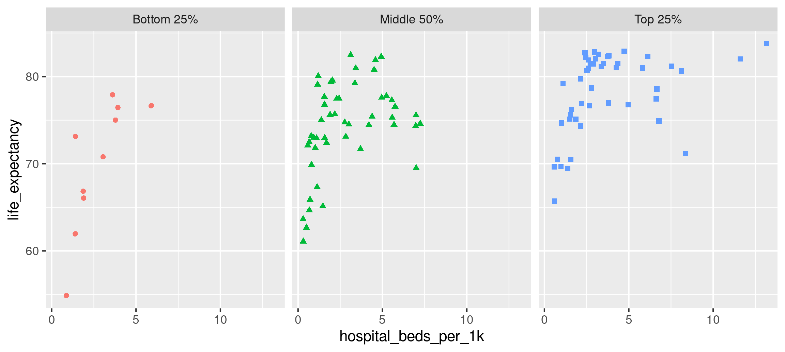
3. Mapping 3rd variables with colors or shapes
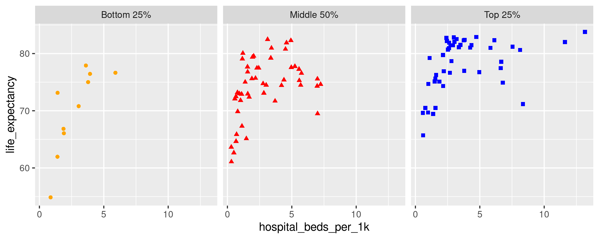
3. Mapping 3rd variables with colors or shapes
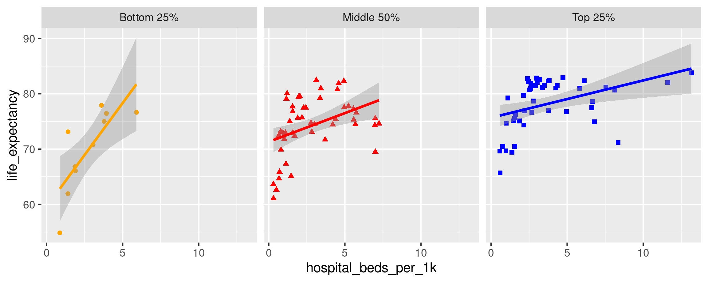
Multivariate Analyses
Descriptive statistics by groups
Using facets to extend any visualization
Mapping 3rd variables with colors or shapes
ggplot2 Dataset: mpg
| manufacturer | model | displ | year | cyl | trans | drv | cty | hwy | fl | class |
|---|---|---|---|---|---|---|---|---|---|---|
| ford | explorer 4wd | 4.6 | 2008 | 8 | auto(l6) | 4 | 13 | 19 | r | suv |
| ford | explorer 4wd | 4.0 | 1999 | 6 | auto(l5) | 4 | 14 | 17 | r | suv |
| toyota | 4runner 4wd | 4.7 | 2008 | 8 | auto(l5) | 4 | 14 | 17 | r | suv |
| pontiac | grand prix | 3.1 | 1999 | 6 | auto(l4) | f | 18 | 26 | r | midsize |
| toyota | toyota tacoma 4wd | 2.7 | 1999 | 4 | auto(l4) | 4 | 16 | 20 | r | pickup |
| ford | f150 pickup 4wd | 5.4 | 1999 | 8 | auto(l4) | 4 | 11 | 15 | r | pickup |
| audi | a4 quattro | 3.1 | 2008 | 6 | auto(s6) | 4 | 17 | 25 | p | compact |
| audi | a4 quattro | 2.0 | 2008 | 4 | manual(m6) | 4 | 20 | 28 | p | compact |
Practice: Which auto manufacturers improved their average city fuel economy when moving from 1999 to 2008 models?
Which auto manufacturers improved their average city fuel economy when moving from 1999 to 2008 models?
manufacturer year cty
1 audi 1999 17.11111
2 audi 2008 18.11111
3 chevrolet 1999 15.14286
4 chevrolet 2008 14.91667
5 dodge 1999 13.37500
6 dodge 2008 12.95238
7 ford 1999 13.93333
8 ford 2008 14.10000
9 honda 1999 24.80000
10 honda 2008 24.00000
11 hyundai 1999 18.33333
12 hyundai 2008 18.87500
13 jeep 1999 14.50000
14 jeep 2008 13.16667
15 land rover 1999 11.00000
16 land rover 2008 12.00000
17 lincoln 1999 11.00000
18 lincoln 2008 12.00000
19 mercury 1999 13.50000
20 mercury 2008 13.00000
21 nissan 1999 17.66667
22 nissan 2008 18.42857
23 pontiac 1999 17.00000
24 pontiac 2008 17.00000
25 subaru 1999 19.00000
26 subaru 2008 19.50000
27 toyota 1999 18.15000
28 toyota 2008 19.07143
29 volkswagen 1999 21.25000
30 volkswagen 2008 20.45455ggplot2 Dataset: mpg
| manufacturer | model | displ | year | cyl | trans | drv | cty | hwy | fl | class |
|---|---|---|---|---|---|---|---|---|---|---|
| hyundai | tiburon | 2.0 | 2008 | 4 | manual(m5) | f | 20 | 28 | r | subcompact |
| dodge | ram 1500 pickup 4wd | 4.7 | 2008 | 8 | manual(m6) | 4 | 9 | 12 | e | pickup |
| land rover | range rover | 4.0 | 1999 | 8 | auto(l4) | 4 | 11 | 15 | p | suv |
| nissan | altima | 3.5 | 2008 | 6 | auto(av) | f | 19 | 26 | p | midsize |
| toyota | toyota tacoma 4wd | 4.0 | 2008 | 6 | auto(l5) | 4 | 16 | 20 | r | pickup |
| dodge | durango 4wd | 5.9 | 1999 | 8 | auto(l4) | 4 | 11 | 15 | r | suv |
| dodge | caravan 2wd | 3.3 | 1999 | 6 | auto(l4) | f | 16 | 22 | r | minivan |
Practice: How do various manufacturers design their fleets to meet the EPA requirements for corporate average fuel economy (CAFE)?
ggplot2 Dataset: mpg
| manufacturer | model | displ | year | cyl | trans | drv | cty | hwy | fl | class |
|---|---|---|---|---|---|---|---|---|---|---|
| audi | a4 quattro | 2.0 | 2008 | 4 | auto(s6) | 4 | 19 | 27 | p | compact |
| chevrolet | malibu | 2.4 | 1999 | 4 | auto(l4) | f | 19 | 27 | r | midsize |
| chevrolet | c1500 suburban 2wd | 5.3 | 2008 | 8 | auto(l4) | r | 14 | 20 | r | suv |
Make a scatter plot of city fuel economy x engine size
Add colors and shapes for drive train
Add facet wrapping for the manufacturers
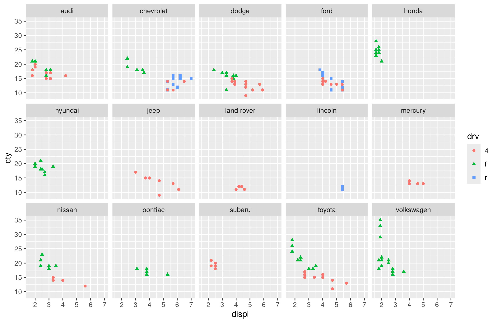
Multivariate Analyses
Descriptive statistics by groups
Using facets to extend any visualization
Mapping 3rd variables with colors or shapes
For Next Class
…
…